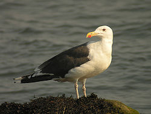
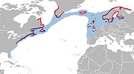
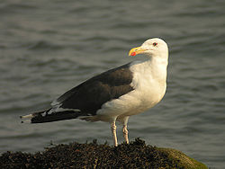
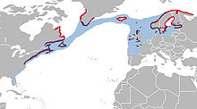

| Great Black-backed Gull | |
|---|---|
|  | |
| Conservation status | |
| Binomial name | |
| Larus marinus Linnaeus, 1758 |
|
|  | |
| Distribution across the Northern Hemisphere |
| Great Black-backed Gull | |
|---|---|
|  | |
| Conservation status | |
| Binomial name | |
| Larus marinus Linnaeus, 1758 |
|
|  | |
| Distribution across the Northern Hemisphere |
The Great Black-backed Gull (Larus marinus) is a very large gull which breeds on the European and North American coasts and islands of the North Atlantic. It is fairly sedentary, but some Great Black-backed Gulls move farther south or inland to large lakes or reservoirs.
The Great Black-backed Gull was one of the many species originally described by Linnaeus in his 18th-century work, Systema Naturae, and it still bears its original name of Larus marinus.[1]
This is the largest gull, bigger than a Herring Gull. It is 71–79 cm (28–31 in) long with a 1.5–1.7 m (5–5.7 ft) wingspan and a body weight of 1.3–2.2 kg (2.9–4.8 lb), though large males regularly exceed this weight.[2][3] It is bulky, and has a powerful bill. The adults have black wings and back, with conspicuous white "mirrors" at the wing tips. The legs are pinkish, and the bill yellow with a red spot.
Young birds have scaly black-brown upperparts, and a neat wing pattern. They take at least four years to reach maturity, development in this species being somewhat slower than that of other large gulls. The call is a deep "laughing" cry.
Great Black-backed Gulls are opportunistic and get most of their food from scavenging (refuse at times comprising more than half of their diet) and capturing fish. However, unlike most Larus gulls, they are highly predatory and frequently hunt and kill any prey smaller than themselves, behaving more like a raptor than a typical larid gull. Lacking the razor-sharp talons and curved, tearing beak of a raptor, the Great Black-backed Gull relies on aggression, physical strength and endurance when hunting, seizing the prey, muscling it into a position where it cannot escape and is unable to fight back effectively (e.g. pinning it to the ground, or holding it aloft) and allowing it to struggle to exhaustion. At this point, the gull will reposition its grip and attempt to break the prey's neck with a bite or vigorous shake, or dispatch it with hammer blows to the skull from the beak. The Great Black-backed Gull may also attempt to use the environment to its advantage, attempting to hold the prey animal's head under water so as to drown it, smashing the its skull against the ground, or a rock, or dropping it from a height onto a hard surface and following up with a diving strike from the beak. This behaviour can commonly be observed in urban areas and landfill sites where the gulls feed on Feral Pigeons, rats and mice. They frequently rob other seabirds of their catch and have been known to follow feeding Humpback Whales, Porbeagles and Northern Bluefin Tuna to catch fish driven to the surface by the larger animals.[4] Great Black-backed Gulls are major predators at the nesting colonies of smaller seabirds, killing and eating eggs, chicks and adult birds. Atlantic Puffins, Common Murres, Herring Gulls, Common Terns, Roseate Terns, Manx Shearwaters, Horned Grebes and Laughing Gulls are regularly culled by the Great Black-backs. They generally target chicks since they are easily found, handled, and swallowed. They can swallow puffins, terns[5] or small ducks whole.
This species breeds singly or in small colonies, making a lined nest on the ground often on top of a rocky stack. A female lays one to three eggs. Young Great Black-backed Gulls leave the nest area at 50 days of age and may remain with their parents for months afterwards, though most fledglings choose to congregate with other immature gulls in the search for food.[4] Chicks and eggs are preyed on by crows, cats, other gulls, storks, raccoons and rats. The Bald Eagle and White-tailed Eagle are the only birds that take healthy, fully grown Great Black-backed Gulls. Killer whales and sharks also prey upon adult birds.
The maximum recorded age for a wild Great Black-backed Gull is 27.1 years.[6]

{kind=link}
{kind=link}
{kind=link}
{kind=link}